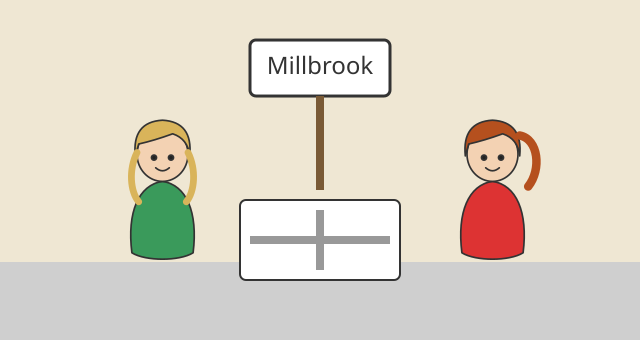
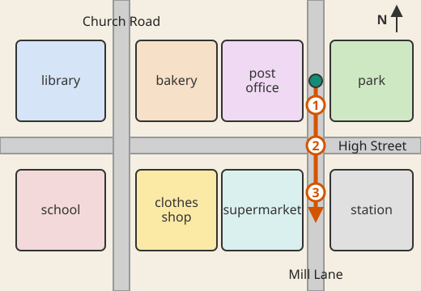

Den Weg beschreiben: Millbrook auf dem Plan
Mit einem KI-Tutor lernen
Ein KI-Tutor erklärt dir diese Seite und hilft dir bei den Aufgaben. Wähl deinen Assistenten:
Mit Claude öffnen Mit ChatGPT öffnen Mit Mistral Vibe öffnen
Du nutzt dein eigenes Konto beim Anbieter. Der Assistent ist kein Angebot von lernapps.net: lernapps liefert nur Inhalte und Aufgaben. Die Wahl gilt für alle Seiten, nur auf diesem Gerät.
Sophie und Ellie mit dem Plan

Von links: Sophie (blonde Zöpfe) und Ellie (roter Pferdeschwanz).
Quelle: eigene Zeichnung. Lizenz: CC-BY-4.0.Es ist Samstag. Mrs Parker setzt Sophie und Ellie vor der Millbrook School ab. Heute gehen die beiden zu Fuß durch die Stadt. Sie haben einen Plan von Millbrook dabei, einen Schemaplan: Das ist ein einfacher Plan, der nicht alles genau zeigt und nicht genau nach Maßstab gezeichnet ist. Er zeigt aber alle Straßen und Orte.

Der Plan von Millbrook (Schemaplan, nicht genau nach Maßstab). Norden (N) ist oben, Osten rechts, Süden unten und Westen links. Der grüne Punkt ist der Start.
Quelle: eigene Zeichnung. Lizenz: CC-BY-4.0.Aufgabe
Lösung
die library richtige Antwort
Die library liegt auf der anderen Seite der High Street, genau auf der Höhe der school.
die bakery
Die bakery liegt auf derselben Seite wie die library, aber hinter der Church Road. Sie ist nicht auf der Höhe der school.
die station
Die station liegt im Osten an der Mill Lane. Sie ist weit von der school entfernt.
Auf dem Plan liegen die school und die library an der High Street auf zwei Seiten, genau einander gegenüber.
Mehr dazu: Lernlandkarte Englisch · Stadt und Wegbeschreibung
Das kannst du danach: Du nennst Orte auf dem Plan und beschreibst einen einfachen Weg: abbiegen, geradeaus gehen und sagen, wo das Ziel liegt. Du kennst die Präpositionen des Ortes und den Imperativ schon aus früheren Kapiteln.
Ein Weg besteht aus Pfeilen
Ein Weg besteht aus einzelnen Schritten, die du dir als Pfeile auf dem Plan vorstellen kannst. Für jeden Pfeil gibt es einen Befehl, den Imperativ: turn left oder turn right (abbiegen), go straight on (geradeaus weitergehen) und cross (überqueren). Am Ziel sagst du, wo es liegt. Auf dem Plan stehen die Namen der Orte auf Englisch, zum Beispiel school und park.

Ein Weg in drei Schritten (Schemaplan, nicht genau nach Maßstab). Du verlässt den park nach Westen und stehst auf der Mill Lane. Der grüne Punkt ist der Start.
Quelle: eigene Zeichnung. Lizenz: CC-BY-4.0.So sagst du den Weg: 1 Turn left. 2 Cross the High Street. 3 The supermarket is on the right.
Merke
Nach turn steht direkt left oder right. Mit to the geht es auch (turn to the left), aber nicht „turn to left“. Ein Befehl beginnt mit dem Verb und hat kein „you“. Am Ziel sagst du on the left oder on the right. Stell dir vor, du gehst selbst: Links und rechts hängen davon ab, in welche Richtung du schaust. Wenn du in eine Straße abbiegst, sagst du into vor dem Namen der Straße.
| Ausdruck | Bedeutung |
|---|---|
| bakery | Bäckerei |
| post office | Post |
| opposite | gegenüber |
| between | zwischen |
| into | in … hinein |
Übung
Aufgabe
Lösung
Richtige Antwort: die Bücherei – the library; der Bahnhof – the station; der Supermarkt – the supermarket; der Kleidungsladen – the clothes shop
library ist die Bücherei, station der Bahnhof, supermarket der Supermarkt und clothes shop der Kleidungsladen.
Mehr dazu: Lernlandkarte Englisch · Stadt und Wegbeschreibung
Aufgabe
Schau auf den Plan und wähle den richtigen Ort.
Der Plan von Millbrook. Norden ist oben, Osten rechts.
Quelle: eigene Zeichnung. Lizenz: CC-BY-4.0.Tipp
Suche zuerst die Orte, die im Satz schon genannt sind, und schau, was zwischen oder gegenüber liegt.
- Der Supermarkt liegt zwischen … und der Mill Lane. → The supermarket is between the … and Mill Lane.
- Der Park liegt gegenüber von … → The park is opposite the ….
Lösung
- The supermarket is between the clothes shop and Mill Lane.
- The park is opposite the station.
Aufgabe
Du stehst vor der school und willst zur station. Du gehst selbst, Norden ist oben auf dem Plan. Schau auf den Plan und wähle das richtige Wort.
Der Plan von Millbrook. Norden ist oben, Osten rechts. Du gehst selbst und schaust in Gehrichtung.
Quelle: eigene Zeichnung. Lizenz: CC-BY-4.0.Tipp
Drehe den Plan in Gedanken, so dass du in Gehrichtung schaust. Dann siehst du, was links und rechts ist.
- Du schaust von der school zur High Street, also nach Norden. Du willst nach Osten gehen. → Turn … into the High Street.
- Du gehst nach Osten bis zur Mill Lane. Dort willst du nach Süden gehen. → Turn … into Mill Lane.
- Du gehst in der Mill Lane nach Süden. Die station liegt im Osten. → The station is on the ….
Lösung
- Turn right into the High Street.
- Turn right into Mill Lane.
- The station is on the left.
Aufgabe
Lösung
Richtige Antwort: 1. Turn, 2. left, 3. into, 4. Church, 5. Road
Der Befehl beginnt mit dem Verb. Danach kommt die Richtung und zuletzt into mit dem Namen der Straße.
Mehr dazu: Lernlandkarte Englisch · Stadt und Wegbeschreibung
Aufgabe
Lösung
Richtige Antwort: Die Aussage stimmt nicht.
Genau gegenüber der bakery liegt der Kleidungsladen (clothes shop). Der supermarket liegt weiter rechts, nur schräg gegenüber.
Mehr dazu: Lernlandkarte Englisch · Stadt und Wegbeschreibung
Aufgabe
Schreibe den Satz auf Englisch.
Tipp
Ein Befehl beginnt mit dem Verb. Für „neben“ brauchst du zwei Wörter.
- Biege rechts ab.
- Die Post ist neben der Bäckerei.
- Die Bücherei ist gegenüber von der school.
Lösung
- Turn to the right. (auch richtig: Turn right.)
- The post office is next to the bakery.
- The library is opposite to the school. (auch richtig: The library is opposite the school.)
Aufgabe
Mach aus jedem Satz einen Befehl für den Weg.
Tipp
Streiche das erste Wort und schreibe den Satz mit großem Anfangsbuchstaben.
- You go straight on.
- You cross the street.
Lösung
- Go straight on. (auch richtig: Go straight ahead.; Go straight.)
- Cross the street.
Aufgabe
Hör zu und schreibe, was du hörst.
- KI
- KI
- KI
Lösung
- Peter waits at the station.
- Amir is in the park.
- Ellie is next to the library.
Selbst sagen und schreiben
Aufgabe
Hör zu, sprich nach und nimm dich auf. Vergleiche dann mit dem Original.
Tipp
Hör den Satz zuerst. Sprich dann langsam nach und achte auf left, right und die Namen der Orte.
- Turn left at the post office.KI
- Turn right at the supermarket.KI
- Ellie walks to the supermarket with Sophie.KI
Zum Aufnehmen braucht diese Aufgabe JavaScript. Die Beispiele kannst du auch ohne anhören.
Lösung
- Turn left at the post office.
- Turn right at the supermarket.
- Ellie walks to the supermarket with Sophie.
Offene Aufgabe
Ein Gast fragt Sophie: „Where is the park?“ Beschreibe den Weg von der school zum park in zwei bis vier Sätzen.
Eine gute Antwort enthält:
Lösung
Turn right into the High Street. Go straight on to Mill Lane. Turn left. The park is on the right.
Weiter durch Millbrook
Sophie und Ellie sind jetzt auf der High Street unterwegs. An der Tür der Bäckerei hängt ein Schild, und Sophie versteht es nicht. Was steht darauf? Das erfährst du auf der nächsten Seite.